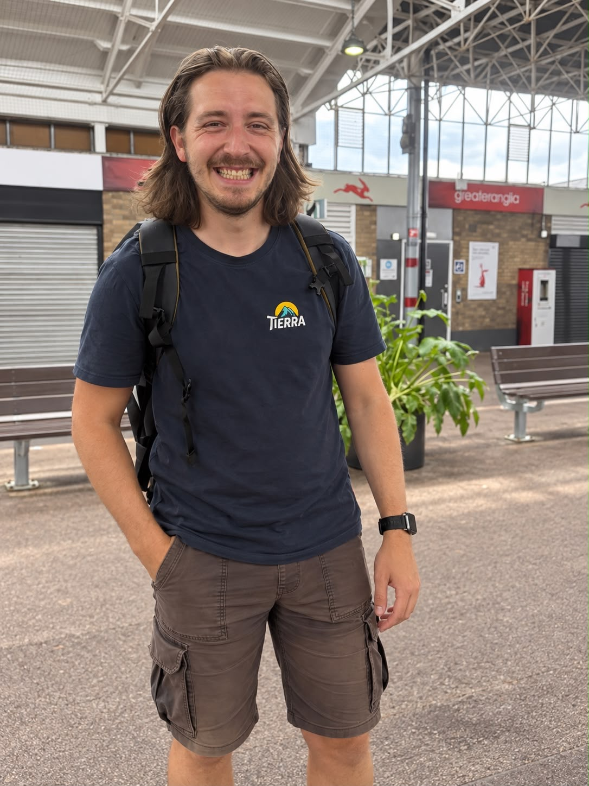

Jake Buck
Hi, I’m Jake. I’ve worked in social care for a number of years, supporting people with learning disabilities and helping set up and run a supported living service for people with mental health conditions. I enjoy getting to know people and helping them do more of what matters to them. My brother has shaped how I think about support: I often ask myself how I’d want someone to support him.
I grew up in Essex and have lived in Nottingham and Cornwall. I’m now in Durham, studying Data Science for Health because I want to understand how technology can make support better for people with disabilities and their carers. Before that, I studied Business, Entrepreneurship and Innovation.
Outside work and studying, I like cycling, walking, travelling and getting outdoors — especially if I’m near the ocean.
A Few Questions to Jake
What motivates and inspires you?
The weird and wonderful, and the everyday things happening around them. I’m fascinated by people and their stories, especially the ones that send me down a rabbit hole about something I knew nothing about. I like asking “why?” and occasionally “why not?”, when perhaps I shouldn’t. I’m also a glass-half-full sort of person. There’s a lot of good in people and the world, even when things are a bit of a mess.
What are your strengths?
I’m good at building relationships and learning what matters to people, and I’m curious enough to keep asking until I understand. I’m also resourceful: if I don’t know how to do something, I’ll do some research and then have a go at figuring it out.
What about your weaknesses, where do you need support?
I have what I call “New Shiny Thing Disorder”. A new idea can distract me from the thing I’m meant to be doing, so sometimes I need help staying on track. I’m not great at spelling, and I find it hard to switch off.
And I hate horses.
What is the highlight of working for Go Beyond Holidays?
The people and the conversations. During trips with Go Beyond, I’ve met such interesting people and loved being part of their holidays. I’ve learnt about everything from Dracula and his origins to religion, football and K-pop. You can spend an afternoon chatting and come away with the most unexpected bit of knowledge. I like that.
Do you have any personal ambitions?
I would like to do a PhD on how technology could improve support for people with disabilities and their carers. Alongside that, my kind of mad bucket list currently includes sailing around the world, becoming a beekeeper, building a cob house and cycling across Europe — plus probably picking up about 47 more hobbies along the way. Life’s pretty absurd when you stop and think about it, so I’d like to make the most of it.
Finally, if you were set adrift on a desert island which three albums, three films, three books and one luxury would you take?
Albums:
Total Life Forever — Foals, Original Pirate Material — The Streets, You’ve Come a Long Way, Baby — Fatboy Slim
Three films:
Interstellar, Cool Runnings, The Hangover
Books:
Shackleton’s Incredible Voyage — Alfred Lansing, Foundation — Isaac Asimov and a practical survival guide (I don’t read a huge amount, so something useful seems sensible)
Luxury item:
My phone, so I could keep in touch with friends and family. I think I’d go a bit mad without them.
Meet the rest of the team...
Go Beyond Holidays is an independent agent for 360 Private Travel. All flights and flight-inclusive holidays on this website are financially protected by the ATOL scheme.
Phone number 00 44 7904 878365
E-mail: info@gobeyondholidays.com

Registered Name & Address:
360 Private Travel Limited, 54 High Street, Sevenoaks, TN13 1JG, United Kingdom,
Registration Number: 8512928. Registered in England & Wales
VAT Number: 163818688 ATOL 7514 IATA 91-2 0005 6 Virtuoso Member Number 3251
An independent affiliate of

360 Private Travel is a member of Virtuoso, allowing Go Beyond Holidays access to preferential rates and exclusive benefits at some of the finest hotels around the world.
For Your Financial Protection